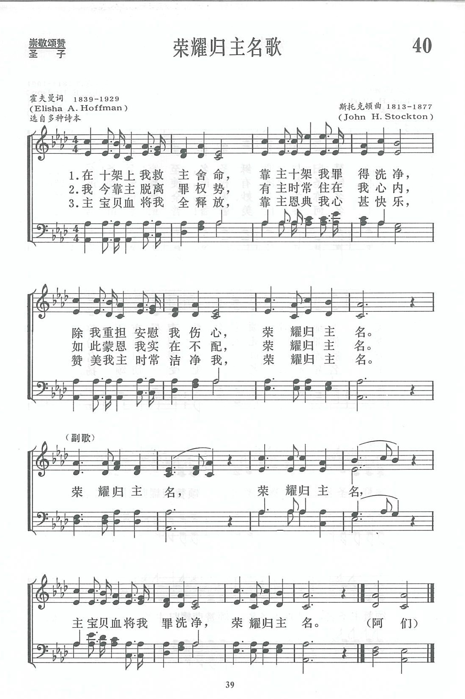

|
|
|
|
1 Down at the cross where my Savior died, Refrain: 2 I am so wondrously saved from sin, 3 Oh, precious fountain that saves from sin, 4 Come to this fountain so rich and sweet, |
1.
|
|
https://www.zanmeishige.com/tab/13671.html?songbook=1&index=40

|
|
|
|
|


荣耀归主名 - 千首赞美诗之158 （国）https://youtu.be/-BPTIU_Swtc -
10 榮耀歸主名 GLORY TO HIS NAME(演奏曲五) https://youtu.be/9iOg-vlKHZc -
Glory To His Name - Classic Hymns (Lyrics)
https://youtu.be/RL7nM4QnK6M
| Text: | Glory to His Name |
| Author: | Elisha A. Hoffman, 1839-1929 |
| Tune: | [Down at the cross where my Saviour died] |
| Composer: | John H. Stockton, 1813-1877 |
| Short Name: | E. A. Hoffman |
| Full Name: | Hoffman, E. A. (Elisha Albright), 1839-1929 |
| Birth Year: | 1839 |
| Death Year: | 1929 |
Elisha Hoffman (1839-1929)

after graduating from Union Seminary in Pennsylvania was ordained in 1868. As a minister he was appointed to the circuit in Napoleon, Ohio in 1872. He worked with the Evangelical Association's publishing arm in Cleveland for eleven years. He served in many chapels and churches in Cleveland and in Grafton in the 1880s, among them Bethel Home for Sailors and Seamen, Chestnut Ridge Union Chapel, Grace Congregational Church and Rockport Congregational Church. In his lifetime he wrote more than 2,000 gospel songs including"Leaning on the everlasting arms" (1894). The fifty song books he edited include Pentecostal Hymns No. 1 and The Evergreen, 1873.
Mary Louise VanDyke
Tune Information
| Title: | GLORY TO HIS NAME (Stockton) |
| Composer: | John H. Stockton (1878) |
| Meter: | 9.9.9.5 with refrain |
| Incipit: | 33211 76153 33553 |
| Key: | A♭ Major |
| Copyright: | Public Domain |
| Short Name: | John H. Stockton |
| Full Name: | Stockton, John H., 1813-1877 |
| Birth Year: | 1813 |
| Death Year: | 1877 |
Stockton, John Hart, a Methodist minister, was born in 1813, and died in 1877. He was a member of the New Jersey Annual Conference of the Methodist Episcopal Church, and the successive pastoral charges that he filled as a member of that Conference are found in the Conference Journal. He was not only a preacher, but a musician and composer of tunes, as well as hymn writer. He published two gospel song books: Salvation Melodies, 1874, and Precious Songs, 1875.
Hymn Writers of the Church by Charles Nutter, 1911
第40首 荣耀归主名歌 GLORY T0 HIS NAME _E．A.Hoffman
经文:“主啊,谁敢不敬畏你,不将荣耀归与你的名呢?”(启15:4)
作者霍夫曼(E．A.Hoffman，l839一1929)是美国福音派牧师，他写的文章、诗词、歌曲颇受人们欢迎。霍氏曾在福音联合会所办的协和神学院肄业，历任福音派及福音长老会牧师多年，并曾在俄亥俄州克利夫兰福音联合出版社工作过11年。
．
这首诗所用的调乃斯托克顿(J．H．Stockton，1813—1877)所谱。斯托克顿出生于美国一长老会信徒的家庭，1832年因参加卫理公会的夏令营受了感动而重生得救，后于1846年在卫理公会新泽西州年议会几个堂内担任牧职。他身体多病，但仍努力写诗和作曲，对于卫理公会内圣乐的发展作出了贡献。生前写过若干圣诗和乐曲，先后出版有《救恩歌曲》(1847年)《宝贵诗歌》(1875)二卷。
斯氏所写的圣诗在福音派中最流行的有“被罪压伤人人要来，救主在此等待”一诗，词、曲都是他自己的创作。
他对传福音的工作贡献也很大，当时的布道家慕迪和桑基曾请他作过助手。1877年3月25日，当他参加早祷后，正当与朋友们谈话时，突然发病，数分钟后，安然归主。
https://www.xueshengshi.com/?p=5234
Words: Elisha Albright Hoffman (b. May 7, 1839; d. Nov.
25, 1929)
Music: John Hart Stockton (b. Apr. 19, 1813; d. Mar. 25,
1877)
Links:
Wordwise Hymns (Elisha
Hoffman)
The Cyber
Hymnal
Hymnary.org
Note: Elisha Hoffman was an American pastor who also wrote many gospel songs. (Over eleven hundred of them are listed on the Cyber Hymnal.) John Stockton was an evangelist with the Methodist Episcopal church. He also wrote the tune for The Great Physician, and words and music for Only Trust Him.
A different version of this hymn was first published in 1878 with a tune by John Sweney, but the next year it appeared in the format we know today, with Stockton’s tune. You can see both versions on Hymnary.org.
There is no doubt about Pastor Hoffman’s passion to proclaim the message of salvation. It can be seen in so many of his hymns–What a Wonderful Saviour, and Are You Washed in the Blood? for example. Even more direct is a lesser known song, Where Will You Spend Eternity?
The present song is deceptively simple. Only one word (wondrously) has more than two syllables. And while the hymn does use imagery to portray a spiritual transaction, it is largely biblical imagery, and easily understood.
CH-1. The Lord Jesus Christ died upon the cross of Calvary to pay our debt of sin (I Cor. 15:3). When we come to the cross, in faith and call upon the Lord for cleansing, the saving power of the blood is applied to us and we are redeemed (Jn. 3:16; I Pet. 1:18-19). In that assurance, we “give unto the Lord the glory [honour] due to His name” (Ps. 29:2; cf. Eph. 1:12).
CH-1) Down at the cross where my Saviour died,
Down where for cleansing from sin I cried,
There to my heart was the blood applied;
Glory to His name!
Glory to His name, glory to His name:
There to my heart was the blood applied;
Glory to His name!
CH-2. Faith brings a confident testimony. Not only am I saved eternally, but I have the Saviour abiding within, through His Spirit, and the knowledge that “He took me in, and I’ve become His child, a part of His forever family (Gal. 3:26; I Jn. 3:1-2).
CH-2) I am so wondrously saved from sin,
Jesus so sweetly abides within;
There at the cross where He took me in;
Glory to His name!
CH-3. The saving power of the cross is more than a point-in-time thing. Through His Holy Spirit, and by the application of the Word of God, the Lord not only saves me but “keeps me clean” (Eph. 5:26; I Jn. 1:7, 9). As we ponder what God has done for us, it is a source of abiding joy and gladness (Isa. 61:10).
CH-3) Oh, precious fountain that saves from sin,
I am so glad I have entered in;
There Jesus saves me and keeps me clean;
Glory to His name!
CH-4. Will we not, in the growing realization of what God has done for us, want others to share in this wonderful salvation (I Pet. 3:15)? Hoffman issues an invitation to others, assuring them of completeness in Christ. This is a new thought. Not only is the sinner lost and hell-bound because of his sin, he is incomplete. He is not all that God wants Him to be and can make him. Positionally, he lacks a righteous standing with God (Rom. 3:23). Conditionally he is spiritually dead (Eph. 2:1), insensitive to the Spirit, and powerless to please God. Through Christ, all of that changes (Col. 2:9-10; Eph. 1:13-14).
4) Come to this fountain so rich and sweet,
Cast thy poor soul at the Saviour’s feet;
Plunge in today, and be made complete;
Glory to His name!
Questions:
1) Are you a Christian? If so, how do you know it?
2) What other hymns make a clear presentation of the gospel?
Links:
Wordwise Hymns (Elisha
Hoffman)
The Cyber
Hymnal
Hymnary.org
https://wordwisehymns.com/2015/02/27/glory-to-his-name/